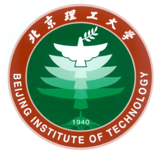

Chi Zhang (张驰)
About me
I graduated with a bachelor's degree in Computer Science and Technology from the School of Computer Science at Beijing Institute of Technology. I am currently pursuing a master's degree in Computer Science and Technology at the same institution, under the supervision of Professor Zhaojing Luo and Professor Meihui Zhang. I have already started my research work at the Intelligent Information Technology Laboratory of Beijing Institute of Technology.
My research interests mainly include: natural language processing analysis, big data in life and health, and medical data mining.
Educations
|
 |
Recommended for admission to Beijing Institute of Technology (double first-class A category, 985, 211)
Department/Major: School of Computer Science, Computer Science and Technology
Laboratory: Key Laboratory of Intelligent Information Technology, Beijing Institute of Technology
Scholarship: Special Academic Scholarship of Beijing Institute of Technology
|
|
|
Department/Major: School of Computer Science, Computer Science and Technology
Rank in Major: 15/323; GPA: 3.8/4.0 [Transcript]
Scholarships: National Scholarship (2021.10), First-class Scholarship 4 times, Second-class Scholarship 3 times, Excellent Moral Education Tutor Scholarship
Honors: Outstanding Student of Beijing Institute of Technology (2020), Outstanding Student Model of Beijing Institute of Technology (2021), Outstanding Student Leader of Beijing Institute of Technology (2022), Outstanding "Three-Full Education" Moral Education Tutor (2021.11), School "Outstanding Communist Youth League Member" Honor
Awards in Competitions: Bronze Award in the 12th Challenge Cup National College Students' Entrepreneurship Competition, Second Prize in Beijing Institute of Technology Mathematical Modeling Competition, First Prize in Foreign Language Teaching and Research Press National English Reading Competition, etc.
|
Intern
|
|
Lenovo Research NLP Algorithm Intern (2024.4 ~ 2024.8)
Main Achievements: Assisted the team in achieving first place in the Chinese retrieval task on the MTEB leaderboard. The project involved large-scale data processing, large model fine-tuning, efficient retrieval algorithm implementation, and significant model accuracy improvement, eventually standing out among global competitors to win first place.
My Role: Responsible for using RAG knowledge enhancement technology and LangChain to generate training data, and for data cleaning, I designed a Multi-Aspect based data generation and cleaning method. Additionally, I was in charge of optimizing the fine-tuning process of large models by incorporating Grad Cache technology into the training of large models, thereby increasing the Batch size limitations during training and enhancing the training effects of contrastive learning, ultimately improving the leaderboard results.
Main Technologies Involved: Langchain, Large Model Fine-Tuning with Lora+Peft, Accelerate&Deepspeed, Pytorch
|
Papers
Jiyun Shi, Chi Zhang, YuQiao Wang, Zhaojing Luo, Meihui Zhang: Knowledge-Assisted Structured Medical Report Generation, WISA 2023, Computer Science
Jiyun Shi, YuQiao Wang, Chi Zhang, Zhaojing Luo, Chengliang Chai, Meihui Zhang: DMRNet: Effective Network for Accurate Discharge Medication Recommendation. IEEE International Conference on Data Engineering (ICDE)(2024)(CCF-A).
Zhaojing Luo, Chi Zhang, Hao Wang , Jiyun Shi, Meihui Zhang: KEIM: Knowledge Graph Empowered Interpretable Model for Diagnosis Prediction. International Conference on Database Systems for Advanced Applications(DASFAA)(2024)(CCF-B).
Chi Zhang, Tao Chen, Jiehao Chen, Hao Wang, Jiyun Shi, Zhaojing Luo, Meihui Zhang: Cost-Effective Framework with Optimized Task Decomposition and Batch Prompting for Medical Dialogue Summary(CIKM)(2024)(CCF-B).
Hobbies
Live Photos